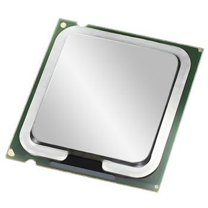
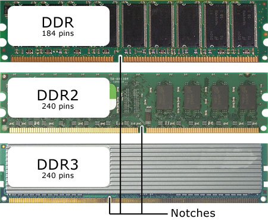
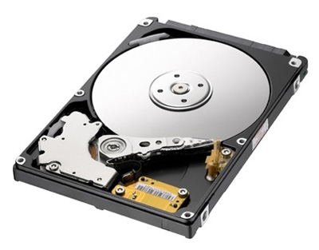
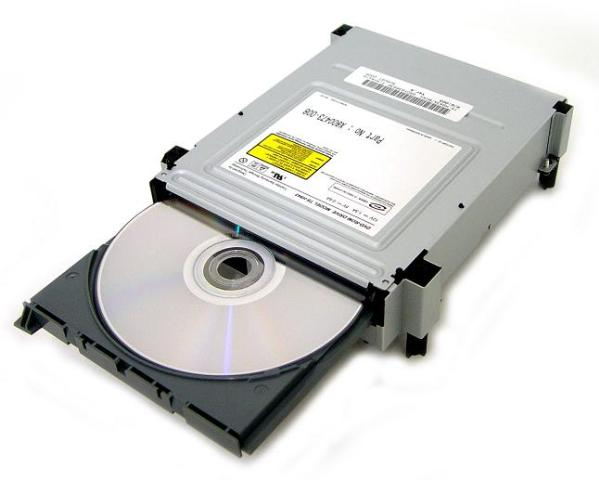
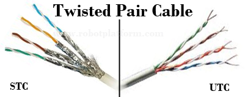
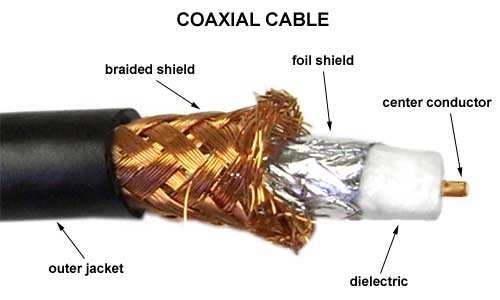
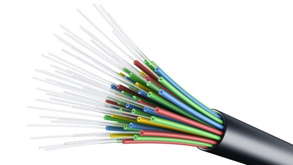
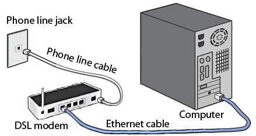
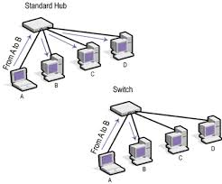
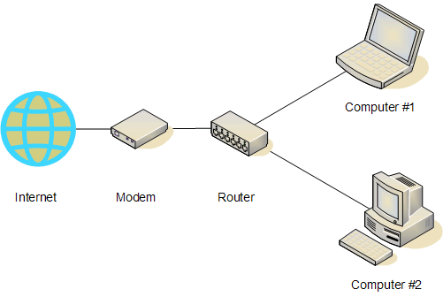

หน่วยที่ 4 อุปกรณ์ที่ใช้ในการเชื่อมต่อระบบอินเทอร์เน็ต
สายไฟเบอร์ออปติค (Fiber Optic) สายไฟเบอร์ออปติคหรือสายใยแก้วนำแสง เป็นสายที่ใช้คลื่นแสงส่งผ่านไปยังตัวกลางใยแก้ว มีการสูญเสียของสัญญาณน้อยมาก ทำให้สามารถส่งสัญญาณด้วยความเร็วสูงและได้ระยะทางที่ไกลขึ้น
ข้อดี มีขนาดเล็กน้ำหนักเบา มีความปลอดภัยในการส่งข้อมูล มีความทนทานและมีอายุการใช้งานยาวนาน ข้อเสีย เส้นใยแก้วมีความเปราะบางแตกหักง่าย มีราคาสูง เมื่อเทียบกับสายเคเบิลทั่วไป มีขั้นตอนในการติดตั้งที่ยุ่งยาก
อุปกรณ์ที่ใช้ในการติดตั้งระบบอินเทอร์เน็ตเพื่อใช้งาน
- 1. เครื่องคอมพิวเตอร์ อุปกรณ์สำคัญในการเชื่อมต่อระบบอินเตอร์เน็ต ควรมีคุณสมบัติดังนี้
- 1. มีหน่วยประมวลผลกลาง (CPU) ตั้งแต่ 233 MHz เป็นต้นไป

- 2. หน่วยความจำ (RAM) ไม่น้อยกว่า 32 MB

- 3. ฮาร์ดดิสก์ ( Hard Disk ) มีขนาดความจุ ตั้งแต่ 1.2GB ขึ้นไป

- 4. ซีดีไดร์ฟ ( CD Drive ) และอุปกรณ์เสริมอื่นๆ เช่น ลำโพง ไมโครโฟน กล้อง เป็นต้น

- 2. สายนำสัญญาณ (Cable) แบ่งได้ 3 ประเภท
- 1. สายคู่บิดเกลียว (Twisted – Pair Cable)
สายคู่บิดเกลียวประกอบด้วยสายทองแดง ที่หุ้มด้วยฉนวนพลาสติก หลังจากนั้นก็นำสายทั้งสองมาถักกันเป็นเกลียวคู่ เพื่อช่วยลดสัญญาณรบกวนภายในสาย สายคู่บิดเกลียวมีอยู่ 2 รูปแบบ คือ
- 1.1 สายคู่บิดเกลียวแบบไม่มีชีลด์ (Unshielded Twisted –Pair Cable :UTP)
- 1.2 สายคู่บิดเกลียวแบบมีชิลด์ (Shielded Twisted –Pair Cable :STP)

ข้อดี ราคาถูก มีน้ำหนักเบา ง่ายต่อการใช้งาน ข้อเสีย มีความเร็วจำกัด ใช้กับระยะทางสั้นๆ
- 2 .สายโคแอกเชียล (Coaxial Cable)สายโคแอกเชียลประกอบด้วยสายทองแดงจะถูกห่อหุ้มด้วยพลาสติก จากนั้นก็จะมีชิลด์ห่อหุ้มอีกชั้นหนึ่งเพื่อป้องกันสัญญาณรบกวน
และหุ้มด้วยเปลือกนอกอีกชั้นหนึ่ง เพื่อป้องกันสัญญาณรบกวนจากคลื่นแม่เหล็กไฟฟ้าสายโคแอกเชียลที่เห็นได้ทั่วๆไป คือ สายที่นำมาใช้ต่อเข้ากับเสาอากาศโทรทัศน์ที่ใช้ตามบ้าน ข้อดี
เชื่อมต่อได้ในระยะไกล ป้องกันสัญญาณรบกวนได้ดี ข้อเสีย มีราคาแพง สายมีขนาดใหญ่ ติดตั้งยาก

- 3. สายไฟเบอร์ออปติค (Fiber Optic)สายไฟเบอร์ออปติคหรือสายใยแก้วนำแสง เป็นสายที่ใช้คลื่นแสงส่งผ่านไปยังตัวกลางใยแก้ว มีการสูญเสียของสัญญาณน้อยมาก
ทำให้สามารถส่งสัญญาณด้วยความเร็วสูงและได้ระยะทางที่ไกลขึ้น ข้อดี มีขนาดเล็กน้ำหนักเบา มีความปลอดภัยในการส่งข้อมูล มีความทนทานและมีอายุการใช้งานยาวนาน ข้อเสีย เส้นใยแก้วมีความเปราะบางแตกหักง่าย
มีราคาสูง เมื่อเทียบกับสายเคเบิลทั่วไป มีขั้นตอนในการติดตั้งที่ยุ่งยาก

- 3. โมเด็ม ( Modem ) หรือ Modulator-Demodulator หมายถึง อุปกรณ์ที่ทำหน้าที่ในการแปลงสัญญาณดิจิตอลจากเครื่องคอมพิวเตอร์ ให้เป็นสัญญาณอนาล็อกเพื่อส่งไปตามเครือข่ายโทรศัพท์ ซึ่งเรียกว่า Modulate และแปลงสัญญาณ ข้อมูลแบบอนาล็อกที่มาจากเครือข่ายโทรศัพท์กลับเป็นสัญญาณข้อมูลแบบดิจิตอลเพื่อใช้กับเครื่องคอมพิวเตอร์ ซึ่งเรียกว่า Demodulate ควรมีความเร็วในการรับส่งข้อความไม่น้อยกว่า 28 Kbps (Kilobit per second) แต่จะให้ดีต้อง 56 Kbps
ประเภทของโมเด็ม (Modem) แบ่งเป็น 2 ประเภท
- 1. โมเด็มแยกตามลักษณะการใช้งาน
- 2. โมเด็มแยกตามมาตรฐานการสื่อสาร และความเร็วในการรับส่งข้อมูล

- 4. โทรศัพท์ (Telephone) ผู้ใช้อินเตอร์เน็ตต้องใช้สายโทรศัพท์และหมายเลขโทรศัพท์ เพื่อการเชื่อมโยงสัญญาณจากแหล่งให้บริการอินเตอร์เน็ต
- 5. ชื่อบัญชีผู้ใช้อินเทอร์เนต (Account) จากองค์กรหรือบริษัทผู้ให้บริการอินเตอร์เน็ต (Internet service Provider : ISP)
- 6. ซอฟต์แวร์ระบบปฏิบัติการ ได้แก่ ซอฟต์แวร์สำหรับติดต่อกับเครือข่ายอินเตอร์เน็ต โปรแกรม Browser และซอฟต์แวร์อื่นๆ ที่ใช้ในการสื่อสารผ่านเครือข่ายอินเตอร์เน็ต
- 7. แผงวงจรเชื่อมต่อเครือข่าย (Lan card) หรือนิยมเรียกกันว่า แลนการ์ด ใช้สำหรับต่อสายนำสัญญาณของระบบเครือข่าย ทำให้เครื่องคอมพิวเตอร์ในระบบเครือข่าย สามารถติดต่อสื่อสารส่งข้อมูลในระบบเครือข่ายได้
- 8. อุปกรณ์กระจายสัญญาณ (Hub/Switch) ฮับ กับ สวิตช์ เป็นอุปกรณ์ที่มีหน้าที่เชื่อมต่อคอมพิวเตอร์ในระบบเครือข่ายเข้าด้วยกัน มีรูปร่างลักษณะภายนอกคล้าย ๆ กัน แต่มีความสามารถในการทำงานแตกต่างกัน ดังนี้
- 8.1 ฮับ (Hub) มีหน้าที่ในการจัดการสัญญาณที่ส่งมาจากเครื่องคอมพิวเตอร์ กระจายสัญญาณต่อไปยังเครื่องคอมพิวเตอร์เครื่องอื่นๆ ทุกเครื่อง หากมีการส่งสัญญาณพร้อม ๆ กันจะทำให้ความเร็วของการส่งสัญญาณในระบบเครือข่ายลดลง ดังนั้น Hub
จึงไม่เหมาะกับระบบเครือข่ายขนาดใหญ่ เพราะมีปัญหาเรื่องความเร็วในการสื่อสาร
- 8.2 สวิตช์ (Switch) จะมีความสามารถในการทำงานมากกว่า Hub โดยที่อุปกรณ์ Switch จะทำงานในการ รับ-ส่งข้อมูล ที่สามารถส่งข้อมูลจากพอร์ตหนึ่งของอุปกรณ์ ไปยังเฉพาะพอร์ตปลายทางที่เชื่อมต่ออยู่กับอุปกรณ์
หรือเครื่องคอมพิวเตอร์ที่ต้องการส่งข้อมูลไปหาเท่านั้น ซึ่งจากหลักการทำงานในลักษณะนี้ ทำให้พอร์ตที่เหลือของอุปกรณ์ Switch ที่ไม่เกี่ยวข้องกับการรับ-ส่งข้อมูลนั้น สามารถทำการ รับ-ส่งข้อมูลกันได้พร้อมกันในเวลาเดียวกัน ด้วยเหตุนี้ทำให้ในปัจจุบันอุปกรณ์
Switch จึงได้รับความนิยมในการนำมาใช้งานในระบบเครือข่ายมากกว่า Hub

- 9. เราเตอร์ (Router) เป็นอุปกรณ์ที่ทำหน้าที่เลือกเส้นทางในการส่งผ่านข้อมูล ทำหน้าที่ในการหาเส้นทางที่ดีที่สุดในขณะนั้น เพื่อลดความเสี่ยงจากการล้มเหลวในการส่งข้อมูล และเราเตอร์ยังสามารถช่วยเชื่อมเครือข่ายสองเครือข่าย หรือมากกว่าเข้าด้วยกัน
เพราะเราเตอร์เป็นอุปกรณ์ที่สามารถทำงานบนเครือข่ายอย่างน้อยสองเครือข่ายขึ้นไป
